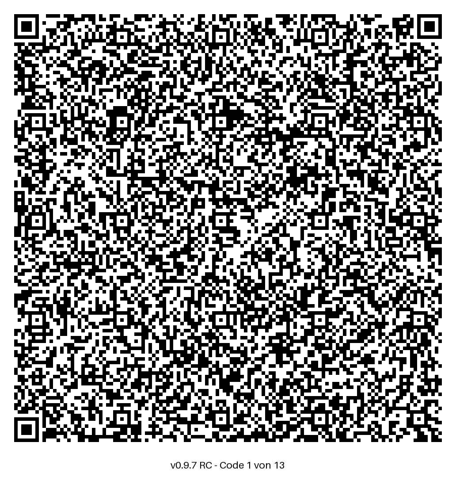

01 Direkter Download
Speichere die gewünschte Experimentdatei auf dem Smartphone und öffne oder importiere sie anschließend in phyphox.
Deutsch herunterladen Deutsch + EnglischVoraussetzungen: Voyager 2, ein Android-Smartphone mit Bluetooth und die phyphox-App. Die zweisprachige Datei verwendet die eingestellte App- beziehungsweise Gerätesprache.
Veröffentlichte v0.9.6, unverändert: Deutsch · Deutsch/Englisch · Online-QR · Offline-QR-Paket (acht Codes).

Frühere Ausgabe v0.9.5: Deutsch · Deutsch/Englisch · Offline-QR-Paket.
02 Online-QR-Code
Öffne den QR-Scanner im phyphox-Hauptmenü und scanne diesen Code. phyphox lädt damit die zweisprachige Experimentdatei. Das Smartphone benötigt für diesen Import eine Internetverbindung.
Direkt zur zweisprachigen Experimentdatei
Der Code enthält einen Verweis auf die auf dieser Seite bereitgestellte .phyphox-Datei.
03 Deutsch – Offline-QR-Codes (13 Stück)
Lade das QR-Paket vorab herunter oder öffne die Codes auf einem zweiten Bildschirm. Scanne anschließend alle 13 nummerierten Codes nacheinander mit dem phyphox-QR-Scanner. Der Import selbst benötigt keine Internetverbindung; die Messung verwendet weiterhin Bluetooth.

Messung durchführen
Vorbereitung: Voyager 2 einschalten, Bluetooth aktivieren, die Verbindung zu anderen Sensor-Apps beenden und das Experiment in phyphox öffnen.
- Den Voyager 2 in phyphox über Bluetooth verbinden.
- Unter Sensorauswahl / Sensor Selection die gewünschten Sensoren auswählen.
- Die phyphox-Aufzeichnung mit ▶ oben rechts starten.
- Danach „Messdaten STARTEN / START DATA“ antippen (empfohlen). Diesen Ablauf auch beim Wiederaufnehmen nach einer Pause verwenden. Jetzt die Messwerte und Diagramme unter Bewegung / Motion und Umgebung / Weather beobachten.
- Sensorwechsel: „Messdaten STOPPEN / STOP DATA“, neue Sensoren auswählen, wieder „Messdaten STARTEN / START DATA“. Die phyphox-Aufzeichnung bleibt aktiv; falls sie pausiert wurde, auch wieder ▶ starten.
- Beenden: erst „Messdaten STOPPEN / STOP DATA“, danach phyphox pausieren.
- Export: ⋮ → Daten exportieren → CSV → speichern/teilen.
NaN im CSV: „Not a Number“ kennzeichnet unter anderem Auffüllwerte unterschiedlich langer Datenreihen. NaN ist nicht gleich null und nicht automatisch ein Sensordefekt; auch fehlende oder ungültige Zahlenwerte können so erscheinen. Nutze die separate Zeitspalte jeder Messgröße, da dieselbe Tabellenzeile nicht automatisch denselben Messzeitpunkt bedeutet. NaN nicht ungeprüft durch null ersetzen.
Mehrere Geräte: Bluetooth-Gerätenamen und Nummerierung. Am 18.11.2026 wurden genau zwei Voyager 2 erfolgreich in PL Voyager 2-01 und PL Voyager 2-02 umbenannt und anschließend mit der bestehenden Integration verwendet. Die erste Namensübernahme war sofort, die zweite verzögert; ein Neustart scheint geholfen zu haben. Das Suchmuster PL Voyager 2 bleibt unverändert. Die Erprobung umfasst nicht alle 14 Unterrichtsgeräte; Beobachtungen zum Herstellerdialog und zu verzögerten Anzeigen stehen in der Anleitung.
Entwicklungstest der Bedienhinweise
Diese separat benannten Testexperimente auf Basis von v0.9.6 ergänzen die neue Reihenfolge und direkt sichtbare START-Hinweise in phyphox. Die Benutzerführung wurde am 18.11.2026 mit genau zwei Voyager 2 erfolgreich erprobt. Es handelt sich um einen durch die testende Person bestätigten qualitativen Funktionstest. Messlogik, BLE-Steuerung, Diagramme und CSV-Konfiguration sind unverändert; die Testexperimente bleiben Entwicklungsstände.
Testdatei Deutsch · Testdatei Deutsch/Englisch
Die veröffentlichten v0.9.5- und v0.9.6-Downloads und QR-Pakete bleiben unverändert. Die Testexperimente sind durch eigene Titel erkennbar.
Experiment 057.5: IR-Entwicklung, Pufferfehler und erfolgreiche Integration. Die ursprüngliche isolierte Datei zeigte keine IR-Werte; Debug01 korrigiert den fehlenden Pufferverbrauch und wurde anschließend erfolgreich auf Android getestet. Auch die gemeinsame Zehnfach-Auswahl hat die Tests vom 19.11.2026 bestanden. Getesteter Stand DE · Getesteter Stand DE/EN. Die getesteten Dateien bleiben unverändert.
Erfasste Messgrößen
Beschleunigung (m/s²), Winkelgeschwindigkeit (rad/s) und Magnetfeld (µT) werden jeweils in drei Raumachsen aufgezeichnet. Hinzu kommen interne Temperatur und externe Temperatursonde (jeweils °C), barometrischer Druck (hPa in der Anzeige, Pa im CSV-Export), relative Luftfeuchtigkeit (%), Hitzeindex (°C), Umgebungslichtintensität (lx) und IR-Entfernung (m). Der angegebene IR-Messbereich beträgt 0,001–6,0 m; die feste Diagrammachse 0–6 m begrenzt nur die Anzeige, nicht Wertanzeige oder CSV-Rohwerte.
Die zehn Messgrößen sind einzeln oder gleichzeitig auswählbar und ergeben zusammen 16 numerische Messkanäle. Mit zehn separaten geschätzten Zeitspalten enthält der CSV-Export 26 Spalten.
Stand der Erprobung und Einschränkungen
Die BLE-Steuerung, dynamische Sensorauswahl, Messwertdarstellung und der CSV-Export wurden mit einem PocketLab Voyager 2 und einem Android-Smartphone praktisch getestet. Die externe Temperatursonde wurde einzeln, gemeinsam mit interner Temperatur, gemeinsam mit Beschleunigung und mit allen neun Messgrößen funktional getestet.
Bestätigte Android-Abschlussprüfungen vom 15.11.2026: Die endgültige deutsche und die zweisprachige v0.9.6-Experimentdatei wurden erfolgreich importiert und visuell geprüft. Alle acht korrigierten Offline-QR-Codes wurden erfolgreich in phyphox importiert. Die externe Temperatursonde ist in Sensorauswahl und Info-/Hilfetexten vorhanden; eine Temperaturmessung mit der Sonde war erfolgreich. Die gleichzeitige Erfassung aller neun Messgrößen war bereits zuvor erfolgreich getestet. Die veröffentlichte Website und ihre Downloads wurden am 15.11.2026 per HTTP geprüft; der Online-QR-Import auf Android bleibt ein offener manueller Test.
Android-Funktionstests vom 19.11.2026, Experiment 057.5: IR allein; IR mit Licht, externer Sonde oder Beschleunigung; alle zehn Messgrößen; Wiederverbindung und erneute Messung; zweisprachige Datei. Wandabstand und Taschenlampe wurden unabhängig verändert, ohne den Sensor abzudecken. IR und Licht reagierten gleichzeitig qualitativ passend. Dies bestätigt Funktion und Kanalzuordnung, keine quantitative Kalibrierung.
Keine unabhängige Kalibrierung oder systematische Langzeitstabilitätsprüfung. Die BLE-Zeitbasis bleibt angenähert. Negative IR-Werte und Werte um 8,191 m sind ungeklärt; sie bleiben ungefiltert, ohne Interpolation oder Nullersetzung erhalten. Für die bisherigen Umweltkanäle bleibt der erste passende Paketdurchlauf nach START unterdrückt; IR und Bewegungskanäle behalten ihn. Weitere externe Fühler und abgeleitete Bewegungsgrößen fehlen weiterhin.
Bis zu acht Notifications je Analysezyklus; weitere bleiben vorgemerkt. Ungültige Mischstapel werden vollständig verworfen und gezählt. Nach STOPP gegebenenfalls das Leeren des vorgemerkten Puffers vor dem Pausieren abwarten. Empfangs-/Wartepuffer können unter dauerhafter Überlast wachsen; Rechenlast und Speicherverhalten sind nicht systematisch langzeitgeprüft. Messwertpuffer halten höchstens 12.000 Werte je Kanal, bei etwa 20 Hz ungefähr zehn Minuten: rechtzeitig exportieren. Die Gerätenummerierung wurde an genau zwei Geräten erprobt, nicht an allen 14 Unterrichtsgeräten.
Bestätigte finale Android-Nachtests vom 21.11.2026: Die aktuellen deutschen und zweisprachigen v0.9.7-Dateien aus Commit 88396e544828249942015b697ca2dbde89c628b1 bestanden Import, Bedienhinweise beziehungsweise Übersetzungen und Messung. Die Wiederaufnahme STOPP → Pause → ▶ → STARTEN sowie alle 13 aktuellen Offline-QR-Segmente mit anschließender IR-Messung wurden erfolgreich geprüft. Frühere Zwölf-Code-Tests betrafen einen vorherigen Kandidatenstand; die Funktionstests sind keine quantitative Kalibrierung.
Im Veröffentlichungsablauf noch offen: Online-QR-Live-Prüfung, HTTP-/Pages-Prüfung und die weiteren Veröffentlichungsschritte. Versionstag und GitHub-Release erfolgen separat.